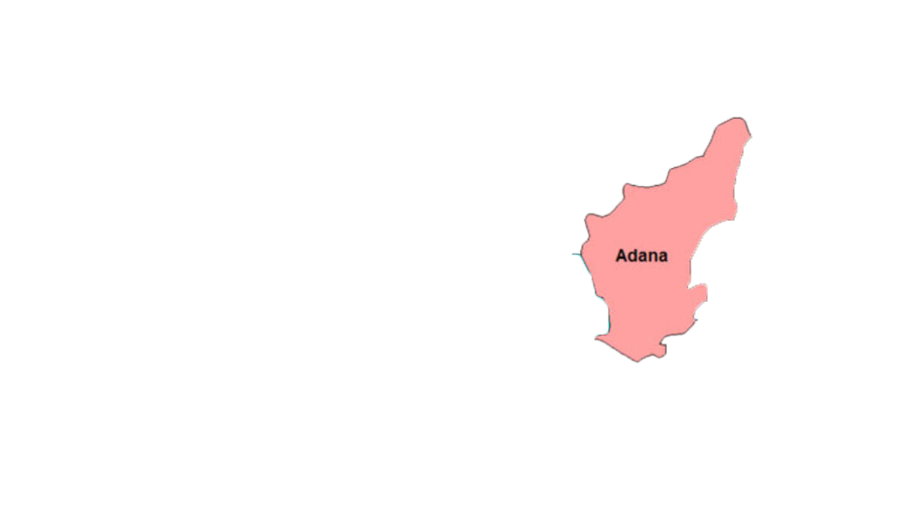
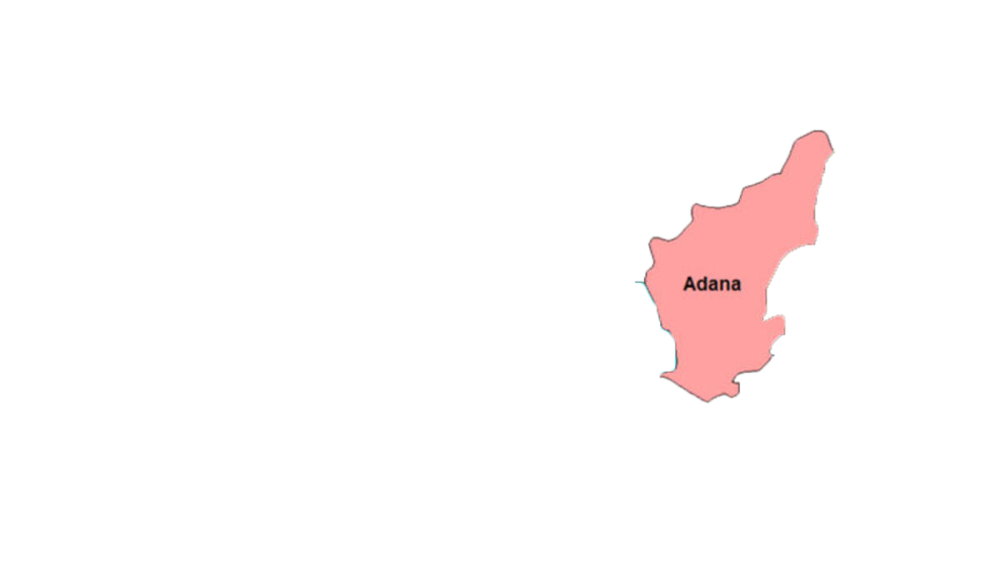
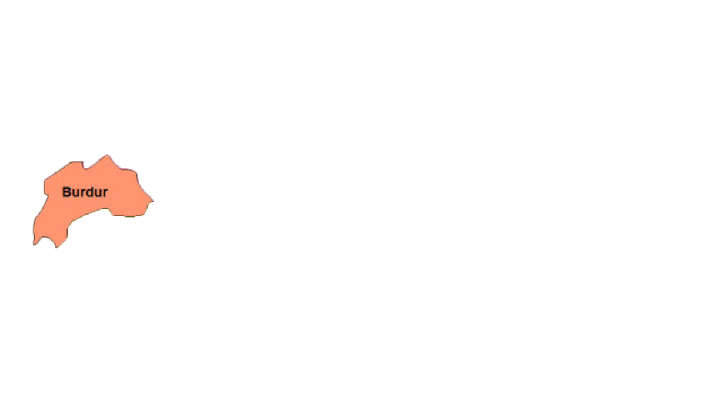
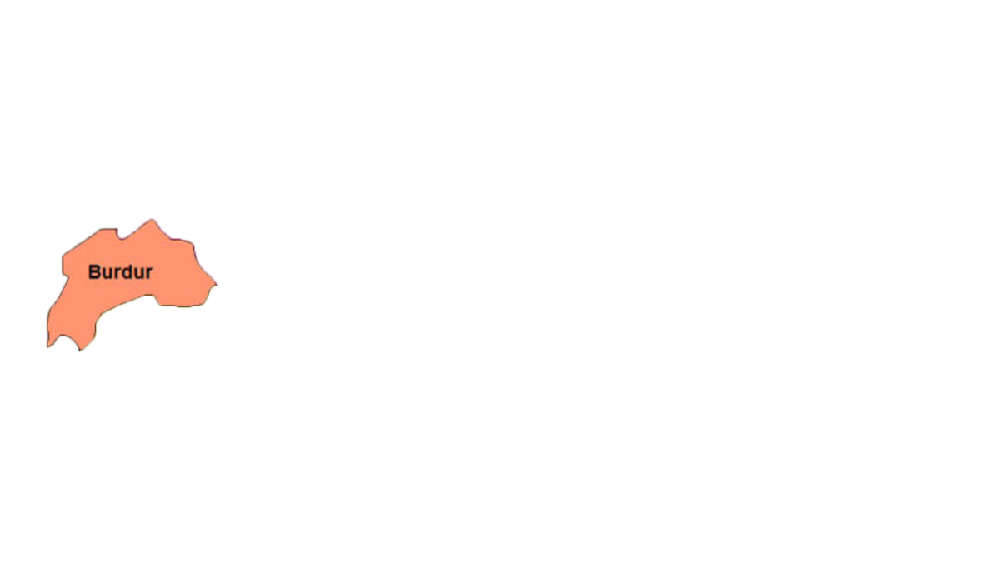

Akdeniz Bölgesi
Coğrafi Konumu
Akdeniz Bölgesi, adını komşu olduğu denizden alır. Bölge genişliği 120180 km arasında değişen bir şerit halinde, batıda Köyceğiz dolaylarından başlayarak, doğuda Hatay ilinin bitim noktası olan Basit Burnu yakınına kadar sokulur. Yaklaşık 120.000 km2 lik yüzölçümüyle Türkiye'nin toplam yüzölçümünün yaklaşık %15'ini oluşturur. Hatay, Adana, İçel, Antalya, Isparta, Burdur ve Kahramanmaraş ilinin büyük bir bölümü Akdeniz Bölgesi'ndedir. Ayrıca Muğla ilinin Köyceğiz, Dalaman, Ortaca ve Fethiye ilçeleri de Akdeniz Bölgesi'ne girer.
Yeryüzü Şekilleri
Bölgenin büyük bir kısmı Toros Dağları ve yüksek platolarla kaplıdır. Genel olarak engebeli ve dağlıktır.
Toroslar, III. Jeolojik zamanda oluşmuş Alp – Himalaya sistemine bağlı genç kıvrım dağlarıdır. Batı ve Orta Toroslar bölge içinde geniş yer tutar. Batı Toroslar Antalya Körfezi'nin her iki yanında da yer alır. Bey Dağları, Çiçekbaba ve Barla Dağları Antalya Körfezi'nin batısında, güneybatı - kuzeydoğu yönünde uzanırlar. Sultan Dedegöl ve Geyik Dağları Antalya Körfezi'nin doğusunda kuzeybatı - güneydoğu yönlü uzanır. Anamur Burnu'nun kuzeyinden başlayan Orta Toroslar, güneybatı - kuzeydoğu yönlü uzanan üç kütleden oluşur. Bunlar, Bolkar Dağları, Aladağlar, Tahtalı Dağları ve Binboğa Dağları'dır. Akdeniz Bölgesi'nde Toroslar'dan başka Hatay - K. Maraş istikametinde uzanan dağların oluşturduğu bir dış sıra halinde Nur (Amanos) Dağları uzanır.
Dağların kıyıya paralel uzanması, Dalga aşındırmasının fazla olmasına ve kıyılarda yalıyarların (falezlerin) çokluğuna neden olmuştur.
Akdeniz Bölgesi'nde yer yer plato alanları bulunur.
Bunlardan biri Antalya Körfezi'nin batısındaki Teke Platosu, diğeri de Anamur Burnu'nun gerisindeki Taşeli Plâtosu'dur. Antalya Körfezi'nin batısındaki dağlarla ve platolarla kaplı karstik arazi "Teke Yöresi" olarak adlandırılır. Teke Yöresi ve Taşeli Platosu bölgenin en tenha yerleridir. Türkiye'de karstik yapının yaygın olduğu yerlerde yağışın fazla olmasına karşın yeraltına sızmanın çok olması, yerüstü sularının zayıf olmasına yol açar. Bu nedenle de bu yerlerde nüfus yoğunluğu azdır.
Dağlar kıyıdan itibaren yükseldiği ve kıyıya paralel olduğu için iç kısımlarla ulaşım ancak bazı geçitlerle sağlanabilmektedir.
Bölgedeki başlıca geçitler şunlardır: Göller Yöresi'ni Antalya'ya bağlayan Çubuk geçidi, İç Anadolu'yu Silifke'ye bağlayan Sertavul geçidi, Amik Ovası'nı İskenderun'a, hatta Suriye'ye bağlayan Belen geçidi ve Çukurova'yı İç Anadolu'ya bağlayan Gülek geçididir. Bu bölgedeki ovalar çöküntü alanlarında alüvyonların yığılması ile oluşmuş birikim alanlarıdır. Bu birikim alanlarından en önemlileri Çukurova delta ovası ile Hatay çukurluğundaki Amik ovasıdır. Akdeniz Bölgesi'nin batısında da kıyıda Antalya ovası ile Göller yöresinin küçük çöküntü ovaları bulunmaktadır. Akdeniz Bölgesi genel olarak engebeli ve dağlıktır. Bölgenin % 80'ini kıyıya paralel uzanan Toros Dağları ile yüksek platolar oluşturur. Bu durum, bölgede nüfus dağılışını, kara ulaşımını, bitki örtüsünü, turizm çeşitliliğini çok etkiler. Sanayi ürünleri çeşitliliği ise bu durumdan en az etkilenir.
Akarsu ve Göller
Bölgedeki akarsular düzensiz rejime sahiptirler. Akarsu rejiminin düzensiz olmasında çeşitli faktörlerin etkisi vardır. Bunlar: Bölgede etkili olan Akdeniz ikliminde yağışların çoğu kış aylarında görülür. Yaz ayları ise çok sıcak ve kurak geçer. Bunun sonucu olarak akarsular kışın kabarır, yazın ise kuruyacak seviyeye gelir. Bölgede karstik yeryüzü şekillerinin geniş yer tuttuğu görülür. Bunun sonucu olarak, yağışlı mevsimlerde suyun bir kısmı yer altına sızarak akarsuların fazla kabarmasını önler. Yazın ise yeraltı suyunun akarsuya karışarak su seviyesinin alçalmasını az da olsa engellediği görülür.
Bölgenin en önemli akarsuları, Asi, Seyhan, Ceyhan, Göksu, Manavgat, Aksu ve Dalaman çayıdır. Bölge göl bakımından zengindir.
Batısında tektonik ve karstik etkenlerle oluşan göllerin yer aldığı Göller Yöresi bulunmaktadır. Beyşehir, Eğirdir, Burdur, Acıgöl, Suğla, Söğüt, Salda, Elmalı ve Kovada gölleri bulunur. Eğirdir Gölü tatlı su gölüdür. Bunun nedeni fazla sularını yer altından Aksu'ya ve dolayısıyla Akdeniz'e boşaltmasıdır.
Bu göllerden Suğla Gölü, zaman zaman kuruyacak derecede su kaybına uğrar. Doğuda Hatay yöresindeki Amik Gölü de, Asi nehrinin taşkınlarının bataklık şeklinde olduğu bir göldür. Bu alan akarsuların getirdiği alüvyonlarla büyük ölçüde dolmuştur
İklim ve Bitki Örtüsü
Bölgede karakteristik Akdeniz iklimi görülür. Yazlar sıcak ve kurak, kışlar ılık ve yağışlıdır. Yıllık sıcaklık ortalaması 18°C'dir. Kıyıda yıllık yağış miktarının 1000 mm yi bulduğu yerler vardır. Akdeniz kıyıları kış mevsiminin en ılık geçtiği bölgemizdir. Buna yol açan nedenler, nemlilik miktarı, güneş ışınlarının düşme açısı ve Toros Dağları'nın doğrultusu ve yükseltisidir. Toroslar, kışın kuzeyden gelen soğuk hava kütlelerinin kıyıya inmesini önler. Yağış maksimumu kış mevsimine rastlar. Bölgedeki yaz kuraklığı ise, dinamik yüksek basınç alanlarının etkili olması, bölgenin alçalıcı hava hareketlerinin etkisine girmesinin sonucudur.
Kıyıdan itibaren yükseldikçe sıcaklık düşmekte, yağış miktarı artmaktadır. Denize dönük yamaçların etekleri bol yağış alır. Batıda Antalya çevresi doğuda, Hatay, Dörtyol, Osmaniye, Kadirli, Bahçe çevresi 1000 mm civarında yağış alır. Oysa ovadaki Mersin ve Adana çevresi 600 - 700 mm yağış almaktadır. Karasallaşmanın belirgin olduğu yerler, bölgenin batı kesiminde genişler. Göller yöresi ve Teke yöresi karasallığın en belirgin olduğu yerlerdir. Sıcaklık farkları artar, kışlar daha uzun sürer. Akdeniz Bölgesi'nde 700 - 800 m'ye kadar maki bitki örtüsü hakimdir. Maki, zeytin, mersin, defne, sakız ağacı, zakkum, keçiboynuzu, vb. kuraklığa dayanıklı bodur bitkilerden oluşur. Bölgedeki ormanlar, makiden sonra başlar, 2400 m'ye kadar devam eder. Daha sonra dağ çayırları yer alır. Orman alanları üzerindeki dağ çayırları yazın kuraklığın etkisi ile kururlar. Akdeniz Bölgesi'nin iç kesimlerine doğru gidildikçe iklim karasallaşır. Özellikle Göller Yöresi'nde yıllık yağış miktarı ve kış sıcaklık değerleri düşmüştür.
Tarım ve Hayvancılık
Bölgede tarım alanları sınırlı olmasına rağmen kıyı şeridinde en önemli ekonomik etkinlik tarımdır.
En önemli tarım alanları başta Çukurova olmak üzere Amik ve Antalya ovalarıdır. İklim özellikleri tarımsal yaşamı şekillendirir. Tarım alanlarından yıl içinde birden çok ürün alma bakımından en elverişli koşullara sahip olan bölgemizdir. Bölgede yetiştirilen başlıca tarım ürünleri şunlardır:
Buğday: Bölgenin hemen her tarafında yetiştirilir. Çukurova'da pamuk ekilmeyen alanlarda da ekilir.
Pirinç: Hatay'da Amik Ovası'nda, K. Maraş çevresinde ve Silifke civarında yetiştirilir.
Pamuk: Başta Çukurova olmak üzere diğer kıyı ovalarında yetiştirilir. Türkiye pamuk üretiminin yaklaşık % 33'ü bölgeden karşılanır. Tütün: Göller Yöresi'nde ve Hatay çevresinde yetiştirilir. Gül: Özellikle Isparta ve Burdur çevresinde tarımı yapılır.
Turunçgiller: Kıyı boyunca Finike, Antalya, Alanya, Anamur, Silifke, Mersin, ve Dörtyol'da yetiştirilir. Türkiye turunçgil üretiminin yaklaşık % 89'u bölgeden karşılanır.
Muz: Alanya ve Anamur çevresinde yetiştirilir. Türkiye'de yetiştirilen muzun tamamı bölgeden karşılanır.
Haşhaş ve ve şekerpancarı: Özellikle Göller Yöresi'nin ürünleridir.
Zeytin ve üzüm: Kıyı şeridinde hemen her yerde yetiştirilir. Ancak bölge halkı daha kârlı olan pamuk üretimine önem verdiği için zeytincilik ve bağcılık fazla gelişememiştir.
Bölge soya fasulyesi, yer fıstığı ve mısır üretiminde de Türkiye'de ilk sıradadır.
Seracılığın en yaygın olduğu bölge Akdeniz Bölgesi'dir. Bölgede kış sıcaklığının sıfır derecenin altına düşmemesi turfanda sebze ve meyveciliğin gelişmesine yol açmıştır. Mersin - Antalya kıyı şeridi turfanda sebzeciliğin en yaygın olduğu yerdir.
Akdeniz Bölgesi'nde hayvancılık fazla gelişmemiştir. Sığır, koyun ve keçi Toroslar'da yaylacılık sistemiyle yetiştirilir. Hayvanlardan en yaygın olanı kılkeçisidir. Çünkü bu hayvan Toroslar'ın sarp yamaçlarında yaşamını kolayca sürdürür.
Yeraltı Zenginlikleri
Krom : Fethiye- Dalaman ve Adana (Aladağlar) çevresinde çıkarılır. Barit : Mersin ve Adana çevresinde çıkarılır. Boksit(alüminyum): Batı Toroslar'da Seydişehir çevresinde çıkarılır. Kükürt : Keçiborlu (Isparta) çevresinde çıkarılır. Demir : Adana (Feke ve Saimbeyli) çevresinde çıkarılır. Asbest : Doğu Akdeniz'de Hatay çevresinde çıkarılır.
Sanayi
Adana Bölümü'nde sanayi daha fazla gelişmiştir. Adana Bölümü'nde dokuma, tütün, gıda, kimya, tarım araçları, çimento, madeni eşya, cam ve tuğla fabrikaları vardır. Mersin, önemli bir liman kentidir.
Mersin'de, Ataş petrol rafinerisi bulunur.
Antalya'da ferro - krom tesisleri, yağ fabrikaları bulunur. Isparta'da gülyağı fabrikaları, çimento fabrikası, tarım araçları yapım merkezleri ve halı fabrikası bulunur. Burdur'da gül yağı fabrikası, şeker fabrikası, tarım araçları fabrikası, süt ve yem fabrikaları yer alır.
Turizm
Bölge turizmden elde edilen gelirler bakımından 3. sıradadır. Burdur'da İnsuyu mağarası, Alanya'da Damlataş mağarası, Tarsus'ta Yedi uyuyanlar mağarası, Antalya yakınlarında Karain mağarası, Düden, Manavgat,
Kurşunlu ve Tarsus şelaleleri, Mersin'deki Cennet ve Cehennem obrukları ve Dilek kuyu mağarası bölgede yer alan ve turizm faaliyetlerine neden olan karstik şekillerdir. Ayrıca yazın erken başlaması deniz turizminin de erken başlamasına ve gelişmesine neden olmuştur. Bütün Akdeniz kıyıları boyunca turistik tesisler kurulmuştur ve kurulmaktadır. Akdeniz Bölgesi'nde Olimpos - Beydağları Sahil,Güllük Dağı (Termessos), Kovada Gölü, Kızıldağ,
Köprülü Kanyon ve Karatepe - Aslantaş milli parkları bulunur. Antalya'da her yıl düzenlenen Altın Portakal Film Festivali ile Mersin Moda ve Tekstil Fuarı da önemli turizm etkinliklerindendir.
Nüfus ve Yerleşme
1997 nüfus sayımına göre, bölgede 8,1 milyon insan bulunmaktadır. Nüfus sayısı bakımından beşinci sırada yer alır. Nüfus yoğunluğu km2 ye 66 kişidir.
Akdeniz Bölgesi'nde nüfusun %70'i Adana Bölümü'nde toplanmıştır.
Bu durumun başlıca nedenleri; • Zengin tarım alanı olan Çukurova'nın varlığı, • Çukurova'da tarım ürünleri işleyen sanayi kuruluşlarının fazlalığı, • Adana Bölümü'nün yollarla Doğu, Güneydoğu ve İç Anadolu'ya bağlanmasıdır. Adana Bölümü'nde Adana, Mersin, İskenderun, Antakya, Kahraman Maraş, Tarsus, Kilis, Kozan, Kadirli, Osmaniye gibi büyük il ve ilçelerde sanayi, tarım ve ticaretin aktif olması nüfusun artmasına neden olmuştur.
Antalya Bölümü'nde ise nüfus, bölge nüfusunun %30 unu oluşturur. Çünkü;
• Antalya Ovası Çukurova kadar verimli değildir.
• Kalkerli kayaların varlığıyla karstlaşma, tarım hayatını olumsuz yönde etkilemektedir.
• Antalya Bölümü'nde ulaşım fazla gelişmemiştir. Burdur ve Isparta yöresi demir yoluyla Ege Bölgesi'ne bağlanmış ve İzmir'in ard bölgesi durumuna gelmiştir.
• Antalya Bölümü'ne bağlı kıyı ovalarının, son yıllarda turizm faaliyetlerine bağlı olarak nüfusu artmaktadır. Buna karşılık toplu yerleşme daha fazladır. Ancak suyun bol olduğu yörelerde dağınık yerleşmeye rastlanır. Bölgenin kıyı ovalarında turistik tesislerin yaygınlığından dolayı dağınık yerleşme hakimdir. Bölgede köy ve kasaba evlerinin yapı malzemesini daha çok kalker taşları oluşturur. Akdeniz Bölgesi nüfus yoğunluğu açısından Türkiye ortalamasının altında bir durum gösterir. Bunun en önemli nedeni bölgenin %90'ını işgal eden Toroslar'dır. Toroslar, Teke ve Taşeli Yöresi Türkiye'nin en seyrek nüfuslu yerlerindendir. Adana Bölümü'nde özel konumunun etkisiyle nüfus yoğunluğu Türkiye ortalamasının üstündedir. Adana Bölümü'ndeki Çukurova pamuk tarımı nedeniyle, Güneydoğu ve Doğu Anadolu illerinden mevsimlik göç alır. Çukurova'da nüfus yaz mevsiminde artmaktadır. Bu artışta tarım işçilerine olan gereksinimin artması rol oynar.
Bölge İle İlgili Notlar
En fazla yer fıstığı üretimi,
En fazla anason üretimi,
Tek Muz yetişme alanıdır,
En fazla seracılık,
En fazla boksit çıkarımı,
En fazla kükürt çıkarımı,
En fazla intansif tarımın yapıldığı,
En fazla karstik şekillerin görüldüğü, En geniş alüvyon ova Akdeniz Bölgesindedir.
Bölge içerisinde;
En az ve en seyre nüfuslu yerler, Taşeli ve Teke yarım adasındadır.
En çok kıl keçisi Adana bölümünde yetişir.
Antalya bölümünün ekonomiye en önemli katkısı Turizmdir.
Adana bölümünün ekonomiye en önemli katkısı ise Tarımdır.
En Büyük şehri Adana'dır.
Dahası için Wiki
 

 
